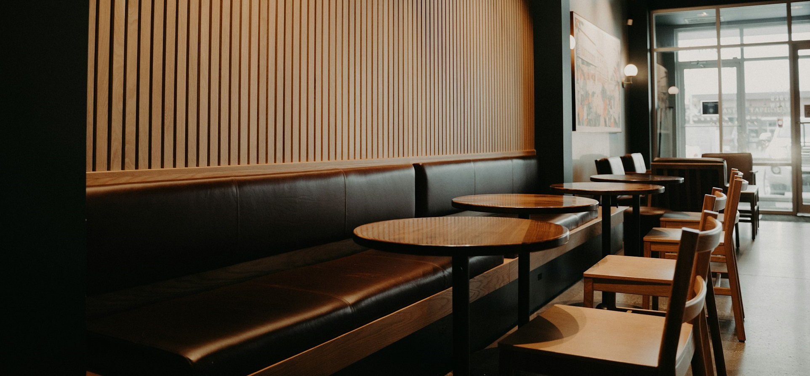

Tervetuloa Kahvila Kanelipuuhun! Meillä jokainen hetki on arvokas ja jokainen asiakas tärkeä. Haluamme tarjota paitsi herkullisia makuelämyksiä, myös lämpimän ja kodikkaan ympäristön ystävien tapaamiseen, etätyöskentelyyn tai kirjan lukemiseen. Meiltä saat ensiluokkaiset erikoiskahvit ja teet, sekä pientä suolaista ja makeaa syötävää siihen kylkeen. Lounasaikaan tarjolla on myös herkullisia voileipiä erilaisilla täytteillä, kattavan salaattibaarin kaverina. Viikonloppuisin meillä on koko päivän brunssi, jonka valikoima vaihtelee viikoittain.
Kahvit, teet, leivokset, suolaiset herkut...